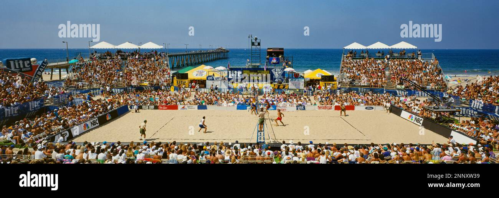

BEACH VOLLEYBALL
VOLLEYBALL TOURNAMENT LEADERBOARD
| POSITION | TEAM NAME | WIN | LOSS |
|---|---|---|---|
| 1. | TIGERS | 3 | 1 |
| 2. | LIONESS | 2 | 2 |
| 3. | BLUE EAGLE | 2 | 2 |
| 4. | SNAKERS | 1 | 3 |
BEACH VOLLEYBALL RULES
OFFICIAL RULES CAN BE FOUND ON THE WikipediA WEB HERE
GAME SETUP:
For beach badminton, create a sandy court with marked boundaries and a securely tensioned net, position players for singles or doubles using the beach volleyball attack line for doubles, mark service courts, use durable shuttlecocks, determine serving teams and court sides with a coin toss, and, if possible, appoint an umpire or referee for a setup that combines badminton excitement with the beach's relaxed atmosphere.
EXAMPLE IMAGES CAN BE FOUND ON THE WEB HERE
